15. SQS¶
SQS(Simple Queue Service)は無制限のスケーラビリティを備えたフルマネージド型の分散メッセージキューサービスで疎結合なシステムを実現できる。
キューイングの種類としては、非同期、Pull型、P2P型となる。 すなわち、ProducerはConsumerの完了を待たず、Consumerがメッセージを拾いに行き、一対一のメッセージングとなる。

SQSは、ほぼ無制限のスケーラビリティを備えたフルマネージドな分散メッセージキューであり、代表的なメリットとしては以下が挙げられる
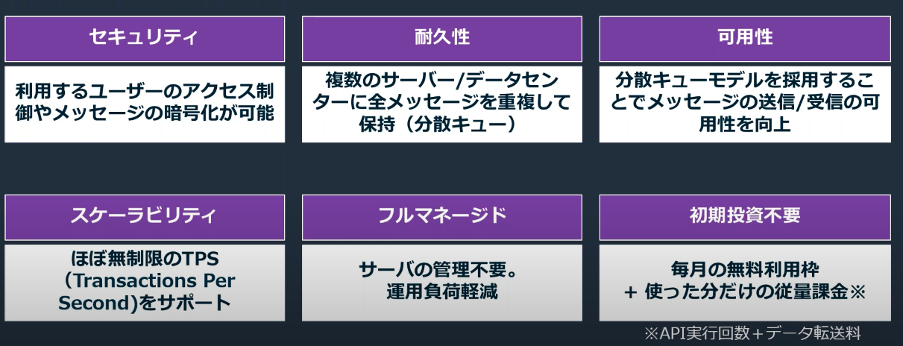
15.1. SQSの登場人物¶
Producer：メッセージを作成する生産者
Consumer：メッセージを取り出して後続処理を行う消費者
キュー：ProducerとConsumer両者を疎結合にする
SNSはPush型の仕組みであり、SQSはPull型である点。
Push型では、TopicからSubscriberへの配信は即時に行われるが、Pull型ではキューからConsumerがメッセージを取り出す必要がある。
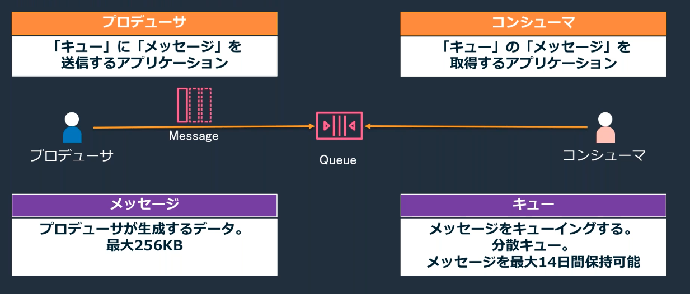
15.2. SQSの利用ケース¶
SQSの利用ケースの代表として以下が挙げられる
大量のリクエストの均一化
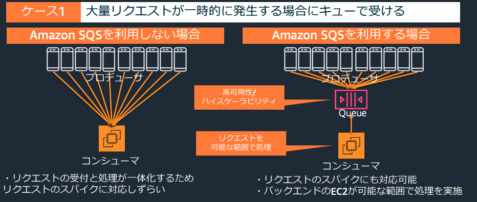
依存関係の低減
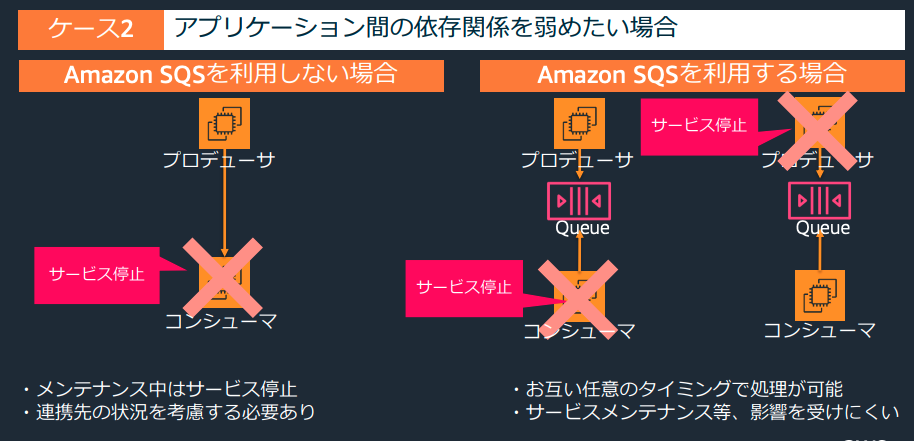
処理の並列化（ファンアウト）→詳細は次節
15.2.1. SNSとSQSの連携（ファンアウト）¶
Producerが複数のキューにトピックを配信する際に、SQSだけではProducer側で並列側の制御が必要であった。 SNSとSQSを組み合わせたファンアウトでは、SNSを経由することで、１つのメッセージ送信で、全てのキューに並列配信される。
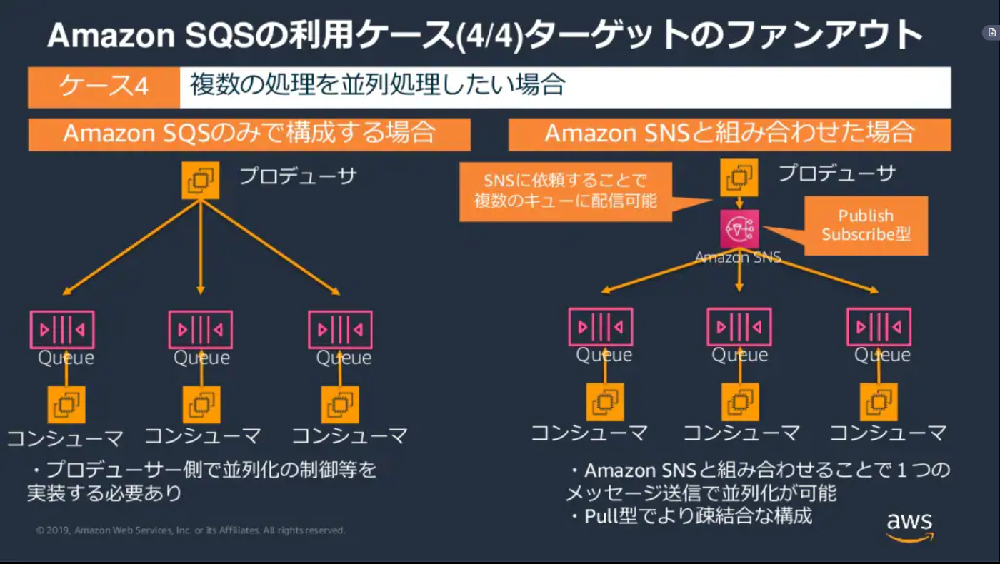
15.3. SQSのキュー詳細¶
SNS同様にスタンダードとFIFOが準備されており、順序性、重複性、スループットの面でメリデメがある。
15.3.1. スタンダートキュー¶
順序性や重複性にある程度許容できる場合はスタンダートキューを利用する
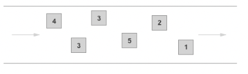
スループット
順序性と重複性が保証がされない代わりに、1sec当たりほぼ無制限のスループットを実現
順序性
保証されないとしても、ベストエフォート型の順位づけは行う。
重複性
少なくとも1回の配信は保証され、まれに複数のメッセージが配信される。
アプリ側で冪等性を担保する必要があるかを見極め、必要であればアプリ側で保証する。
この問題が発生するのは、キュー側でメッセ０時の冗長性を高めるためにメッセージが複数のサーバーに保存されるため
15.3.2. FIFOキュー¶
順序性や重複性を厳密に保証する場合はfifoキューを利用する。
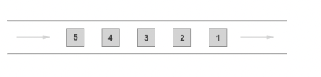
スループット
スタンダートキューは1secあたり無制限であったが、fifoキューについては制限がある
1secあたり最大300回のAPIコールをサポートしている(Send/Dellete/Recieve)
SendMessageとDeleteMessageについてはバッチ処理で10個のメッセージを処理できるので、1secあたり最大3000回分のAPIコールが可能
順序性
メッセージの送信・受信順序は厳密に担保
重複性
メッセージの重複がしないような仕組みが導入されている
15.4. FIFOキューの深掘り¶
FIFOキューでは送信時にメッセージグループIDとメッセージ重複IDを指定する
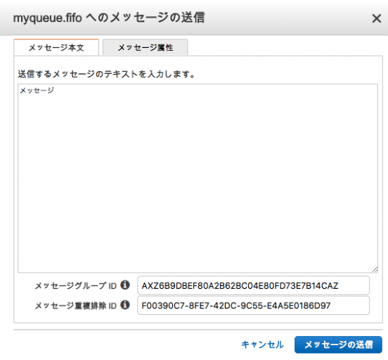
受信時には受信リクエスト試行IDを指定する
15.4.1. メッセージグループID¶
FIFOキューでメッセージを送信する際に、指定する必須のID
メッセージが特定のメッセージグループに属することを指定し、常にメッセージグループ内での順序性を担保する。（異なるメッセージグループのメッセージは順序性が担保されない）これはMSKで言う、partitionに対応。
順序性を担保するためのFIFOキューの挙動は以下。 メッセージグループID-Aに含まれるメッセージをConsumer-XがConsumeした場合、処理中のメッセージが処理されるまではどのConsumerもメッセージグループID-AからConsumeすることができない。
一方で、FIFOキューを利用しつつメッセージグループIDを全て異なるIDとすることで、順序性は失われるが重複性は担保されるキューを作成することができる。（以下のセクションで述べている通り、それであってもアプリ側の冪等性は必要）
15.4.2. メッセージ重複ID¶
FIFOキューでメッセージ送信する際に、任意で指定するID
送信側〜SQSのキュー側で、重複をなくすための仕組み
メッセージグループIDに限らず、キュー全体に適用され、指定したIDのメッセージが短時間（デフォルト5分)以内に送信されてくると、後から来たメッセージを削除する。
このメッセージ重複をなくす仕組みと順序性の担保によって、同じメッセージが配信されることを防ぐことができる。
ただし、Consumerのメッセージ削除が失敗した場合、可視性タイムアウトが終了すると、Consumerに再度ポーリングされた場合は処理されてしまうので、その対応としてConsumerのアプリ側で冪等性を担保することは重要。
15.4.3. 受信リクエスト試行ID¶
FIFOキューでメッセージを受信するときに、指定できるID
可視性タイムアウト中であっても、このIDを利用して受信リクエストすることで、呼び出すことができる。 FIFOキューでは順番が担保されるため、あるメッセージのタイムアウト待ちが発生してしまうと、全体の処理が詰まってしまう。この問題に対して、受信リクエスト試行IDを利用することで可視性タイムアウト中であってもメッセージを明示的に再度受信することができる。
15.5. キューの詳細設定項目¶
15.5.1. キューの保存期間¶
デフォルトでは４日間が設定されており、最大で14日間まで変更可能
この設定は、MessageRetentionPeriodで設定する
15.5.2. SQSの容量¶
SQSでやり取りすることができる容量は最大256kB
しかし、S3とJava拡張ライブラリを利用することで、SQSのメッセージサイズを超過して2GBまで対応することができる。
15.5.3. SQSのキューの削除¶
Purge Queueを利用すると、指定したキューないのメッセージを削除することができる。
15.5.4. デットレターキュー¶
正常に処理できないメッセージがキューに滞留することを避ける機能。
Redriveポリシーで、移動させるルール（最大受信数）とメッセージ格納先（デットレターキュー）を指定する デットレターキューでのメッセージ保存期間を設定できるが、デットレターキューに格納されてからの日数ではなく、メッセージ自体のタイムスタンプを参照する点に注意
15.5.5. 重複削除¶
FIFOキューでは重複を排除するための機能が備わっている。
あるメッセージが送付されてから5分間の間に同一のメッセージが送られてきた時に重複を削除することができる。
15.6. キューからのメッセージ取得¶
次の3ステップを踏む
Consumerがキューをポーリング（キューの監視）
Consumerがメッセージ取得（最大10件までまとめて取得可能）
Consumerが処理済みメッセージをキューから削除
特に注意が必要なのはメッセージの削除であり、Consumerがキューを取得したからといって、メッセージは自動削除されない。 メッセージ削除の際は取得したMessageのIDである「ReceiptHandle」を指定するが、他のConsumerがメッセージに触れると「ReceiptHandle」が書き換えられてエラーになるの可能性があるので、可視化タイムアウトなどの設定を使うようにする。
15.6.1. ポーリング¶
Consumerが一定間隔でSQSに対してメッセージを監視する仕組みをポーリングと呼ぶ。
ポーリング時にはメッセージ受信待機時間(ReciveMessageWaitTimeSeconds)を設定することができ、キューに溜まったトピックを確認する間隔を設定できる。
ショートポーリング
受信待機時間を0にすると設定できる。 分散されたSQSのサーバーから一部をサンプリングして即時返答（メッセージがない場合は、中身がないという返信を即時にする形となる。
問い合わせと返信をし続けるため料金が高くなりがちロングポーリング（推奨)
受信待機時間を1-20にすると設定できる。
分散配置されたSQSの全サーバーに対してポーリングを行い20secの待機時間を設ける
中身がない場合は、すぐに返信するわけではなく設定時間分待機し、メッセージが入って来れば即時返信、入ってこなければ待機を続ける。
問い合わせして、メッセージがあれば即時受信、なければ待機となるので料金は安くなる。
15.6.2. キューの待機時間設定¶
Producerがキューに格納してからConsumerが取得するまでの時間を遅延させたり、 Consumerがキューを取得してから他のConsumerがメッセージを取得するまでの時間を遅延させたりすることができる。
以下の図は、後述する遅延キュー（メッセージタイマーと可視性タイムアウトの関係）
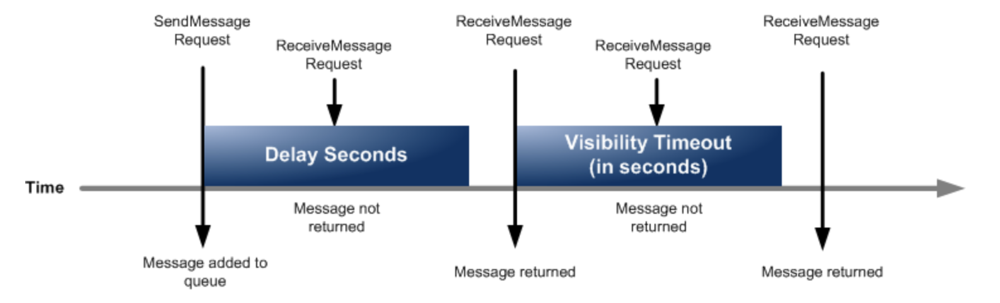
15.6.2.1. 遅延キューとメッセージタイマー¶
Producerからキューにメッセージを送信してからConsumerが取得できるようになるまでをずらすことができる機能。
遅延キューはキュー全体に設定が反映される
配信遅延時間(DelaySecondsパラメータ)を設定するメッセージタイマーは特定メッセージに対して設定が反映される
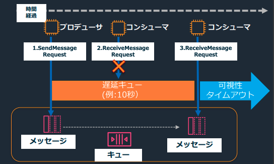
15.6.2.2. 可視性タイムアウト¶
Consumerがメッセージを取得してから、他のメッセージを取得できるようにするまでの待ち時間を設定することができる機能。
他のConsumerによる同一メッセージ処理を極力防止することができる。
極力というのは、スタンダートキューの場合は重複性を完全排除はできない点に注意。
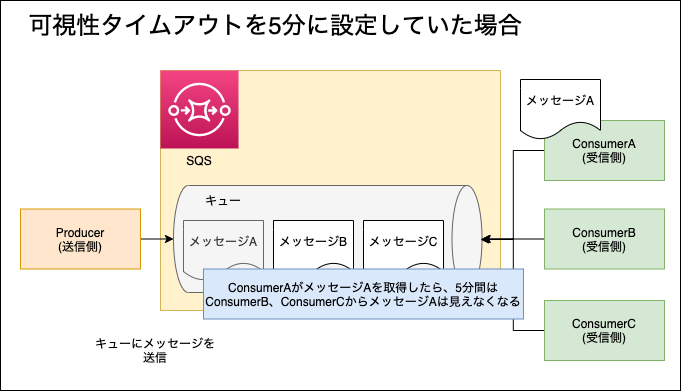
15.7. セキュリティ¶
15.7.1. 暗号化¶
SQSはKMSと統合されており、KMSによってメッセージを暗号化できる。 ProducerとConsumerがKMSの暗号化鍵へアクセスする必要がある。
SQSはIAMによるアクセス制御に加えて、キューに対して、独自のアクセスポリシーを付与することで、IAMと合わせてアクセス制御することができる。
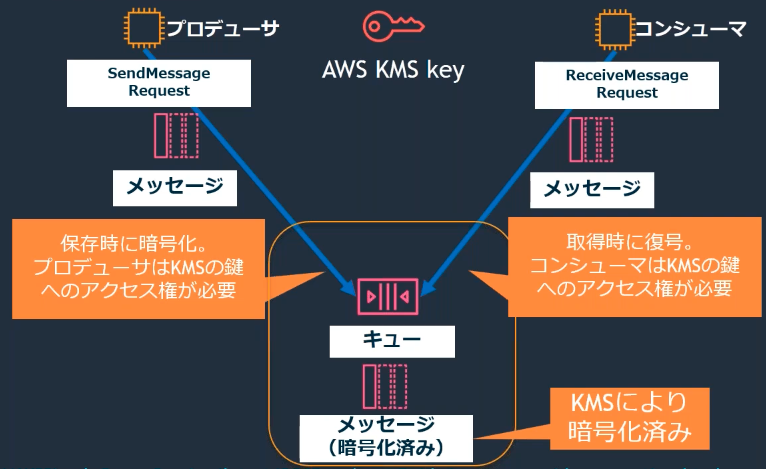
15.7.2. アクセス制御¶
以下で制御が可能
IAMポリシー: 特定のユーザーやロールに対してキューへのアクセス制御が可能
SQSポリシー: 特定のキューに対するアクセス制御が可能
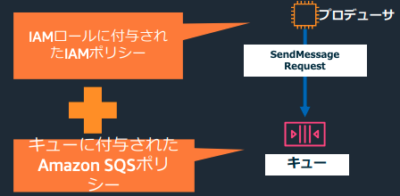
15.8. SQSのメトリクス¶
Amazon CloudWatchと連携して、モニタリングが可能。 詳細は公式ドキュメントを参照されたい。
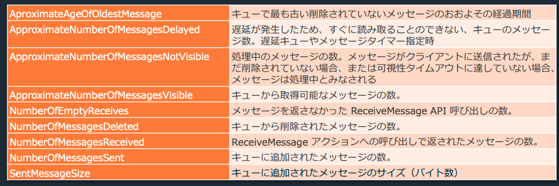
USEメソッド（利用度、飽和度、エラー数）とその他に分けて、メトリクスを紹介する。 その前に、メトリクスを理解する上でも重要なReceiveMessage APIについて解説する。
15.8.1. ReceiveMessage API¶
SQSで利用できるAPIであり、メトリクスの取得でも利用されている。
SQSでメッセージを取得するために利用するAPIである。アプリケーションはReceiveMessage APIを利用して、処理に必要な情報を取得する。 ReceiveMessage APIが提供する機能は以下
キューに対するポーリング
メッセージを処理するための情報の取得（メッセージID・本文・タイムスタンプ）
メッセージ受信後のメッセージに対する更新
このAPIのパラメタ設定を行い、受信数などを調整する。
15.8.2. Utilization(使用度)¶
どれだけキューが利用されているかを確認するためのメトリクス
NumberOfMessageSent:キューに追加されたメッセージ数
SentMessageSize:キューに追加されたメッセージサイズ（バイト数）
ApproximateNumberOfMessageVisible: キューから取得可能なメッセージ数
ApproximateNumberOfMessageNotVisible: 処理中のメッセージ数。Consumerに受け取られてまだ削除されていないメッセージや可視性タイムアウト中のメッセージが対象
15.8.3. Satulation(飽和度)¶
どれだけキューにメッセージが溜まり、システムが正しく処理を捌き切れているかを確認するためのメトリクス 飽和度はシステムが詰まって、正しく処理をできていないことを図る指標であるのでApproximateNumberOfMessageVisibleやApproximateNumberOfMessageNotVisibleを含めるかは微妙。
ApproximateNumberOfMessageVisible: キューから取得可能なメッセージ数
ApproximateNumberOfMessageNotVisible: 処理中のメッセージ数。Consumerに受け取られてまだ削除されていないメッセージや可視性タイムアウト中のメッセージが対象
ApproximateAgeOfOldestMessage:キューに入ってから、処理されていないキューの最大時間
ApproximateNumberOfMessageDelayed:遅延キューやメッセージタイマーの対象となっているメッセージキューの数。
15.8.4. Errors(エラー数)¶
キューにおける失敗したメッセージを確認するメトリクス。 失敗したメッセージについては、DLQに移動させることが多いので、DLQでApproximateNumberOfMessageVisibleなどを取得する方法が挙げられる。単独のキューに対しては以下のようなメトリクスが取得できる。
NumberOfMessagesReceived: Consumerが正しく
受信をしたメッセ- NumberOfMessagesDeleted: キューから削除されたメッセージ数。すなわち正しく処理されたメッセージ数を把握できる。NumberOfEmptyReceives: AppがReceive Message APIを送信したが、取得できるメッセージがなかったという返り値が返却された回数。この回数が多いことは、タイミングや頻度が悪く、メッセージを効率よく取得できていないことを表す。
15.9. SQSのメトリクスを利用したオートスケーリング¶
公式ドキュメントにSQSを利用したオートスケーリングの記事があったので、その内容を整理する。
ドキュメント内で注意されているのは、SQSの処理可能なメッセージ数を表すApproximateNumberOfMessagesVisibleを利用してオートスケーリングを設定しても良いが、このメトリクスはキュー内のメッセージ数だけを取得しており、この値だけを利用してスケールアウトしても適切な処理台数を設定できないという課題を扱っている
オートスケールの台数は複数の要因に従って、用件を決め、それを満たせるようなルールを設定するべき。例えば以下の要件があることを考える。
メッセージの処理時間
許容されるレイテンシー
許容されるレイテンシーが10secであり、メッセージの処理時間が0.1secであれば、1台あたり、100件のメッセージまでは処理することができる。ApproximateNumberOfMessagesVisibleに対して100で割ることで必要な台数を算出し、それを踏まえて台数を決定する。
15.10. kinesisとの比較¶
ストリーミングデータであればkinesis一択。それ以外の場合は以下のデータの特性によって判断
データの処理方法
データサイズ
保持期間
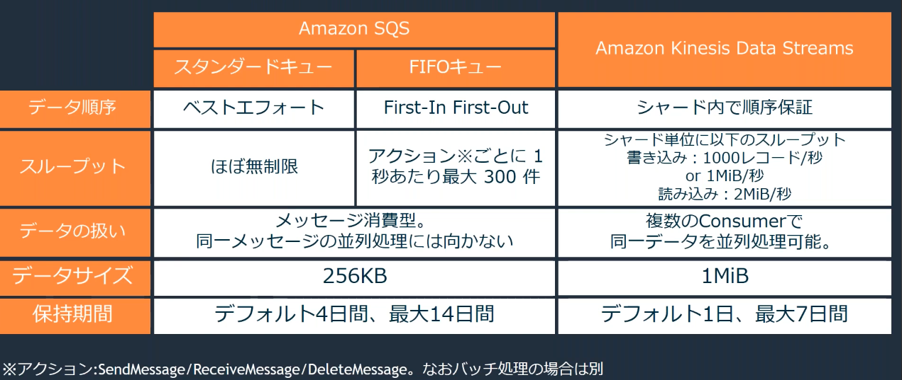